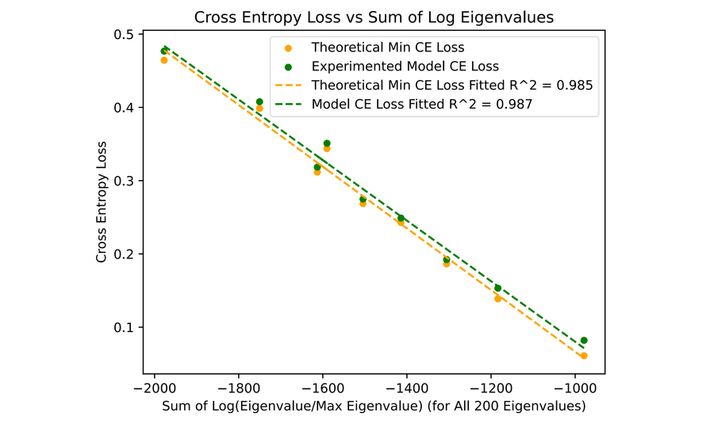

Generative Policies
RL for expressive policy classes such as flow-based policies, diffusion/flow-matching models, and LLMs.
Hi! I'm Qinwei Ma (马钦伟). You can call me Martin, or by my nicknames Martini/Aquapony. I am a first-year PhD student in the College of AI at Tsinghua University, advised by Prof. Alex Lamb. I received my undergraduate training from IIIS / Yao Class at Tsinghua University from 2021 to 2026.
My research is organized around a unified theme: reinforcement learning for generative models and world-model-grounded decision making. I am interested in general RL methods for expressive generative policies, including flow-based policies and LLMs, and in using world models not only to train policies, but also to constrain policy behavior through dynamics, feasibility, and long-horizon consistency.
From February to August 2026, I interned with the Tencent Hunyuan Video World Model Team, working on self-forcing, distillation, and RL post-training for video world models. I also previously collaborated with Prof. James Zou and colleagues at Stanford.
Previously, I had the honor to be mentored by many wonderful researchers, including Prof. Hang Zhao, Prof. Chuang Gan, Prof. Tong Zhang, and Dr. Lei Li. My long-term collaborator Jingzhe Shi has also been my high school and undergraduate classmate.
Before college, I won a gold medal in the 36th National High School Physics Olympiad, which directly granted me admission to Yao Class. I also took part in the Mathematics and Informatics Olympiads. I studied at Shanghai Foreign Language School, where German was my first foreign language.
Most importantly, I wish to thank my girlfriend Wanfei Li, who keeps supporting me in both research and daily life.
Feel free to contact me for potential collaboration!

I want to build AI systems that are more capable, helpful, and controllable. My current focus is reinforcement learning for generative models and world-model-grounded decision making: how expressive models learn from feedback, how they explore and improve, and how world models can impose structure on action through physics, feasibility, and temporal consistency.
RL for expressive policy classes such as flow-based policies, diffusion/flow-matching models, and LLMs.
Learning models of dynamics that support planning, policy evaluation, and constraints over long horizons.
Understanding the principles behind scaling behavior, feedback learning, and the limits of current model families.
What I'm working on now. I am thinking about ELBO-based RL and flow-matching policies, robotic world models, and long-horizon world models. At a high level, I am especially interested in methods that make generative policies both stronger and more grounded in the dynamics of the environments where they act.
* stands for equal contribution; † denotes second-author contribution.
Preprint, under review at ICLR 2027

ICLR 2026 Oral

ICLR 2026
A process-level physics reasoning benchmark based on directed acyclic graphs that encode causal dependencies among solution steps, with rule-based symbolic formula matching for robust validation.

Preprint
A two-stage framework that integrates embodied prior learning and online reinforcement learning for embodied vision-language agents.

NeurIPS 2024
A theoretical and empirical study of scaling behavior in time series forecasting, including the role of look-back horizon.
PhD student, 2026-present
Advisor: Prof. Alex Lamb.
Undergraduate student, 2021-2026
Computer Science and Technology.
Research intern, February 2026-August 2026
Worked on self-forcing, distillation, and RL post-training for video world models.
Former research intern/collaborator
Past collaboration with Prof. James Zou and colleagues.
Research collaborator, March 2024-October 2025
Collaborated with Dr. Lei Li on NLP and time series research.
Research intern, January 2025-June 2025
Research advisor: Prof. Tong Zhang.
Research collaborator, June 2024-October 2024
Research advisor: Prof. Zhaoran Wang.
Remote researcher, November 2023-April 2024
Research advisor: Prof. Chuang Gan.
A complete list can be found in my CV.
Besides research, I make a serious effort to keep my life rich. A few things matter especially much to me.
I am a huge fan of musical theater and have had the chance to perform in several productions:
I have also played major roles in musical excerpts, including Gabe in Next to Normal and Raoul in The Phantom of the Opera. I directed a ten-minute mixed excerpt of Next to Normal for the tenth anniversary of the Tsinghua Musical Club.
Although I suffered a major injury in my sophomore year of college, I still try to stay active through soccer, badminton, and other sports.
Bridge has been an important hobby since junior high school. In college, I was a member of the Tsinghua Bridge Team. I competed in the National College Students' Bridge Open Tournament Mixed Division and won second place. In separate team events, I also ranked eighth and sixth among the finalists with the Tsinghua team.
I am also a big fan of werewolf-style games. I was once invited to the popular Chinese variety show 京城大师赛, but could not attend because of a schedule conflict.